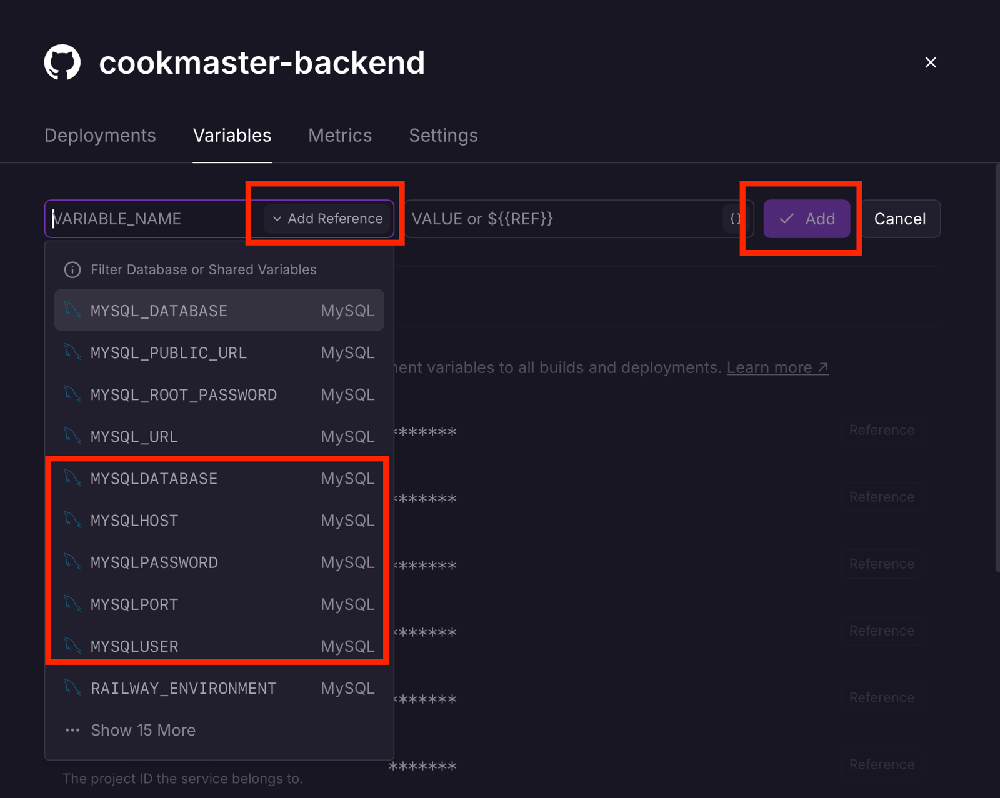
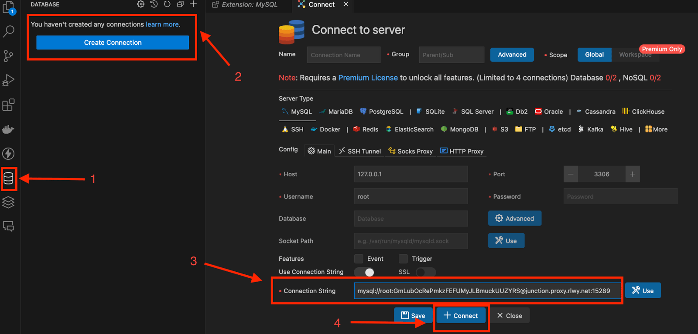
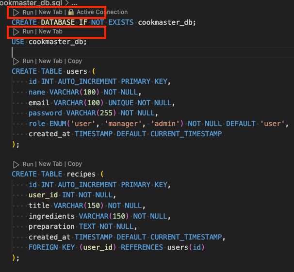
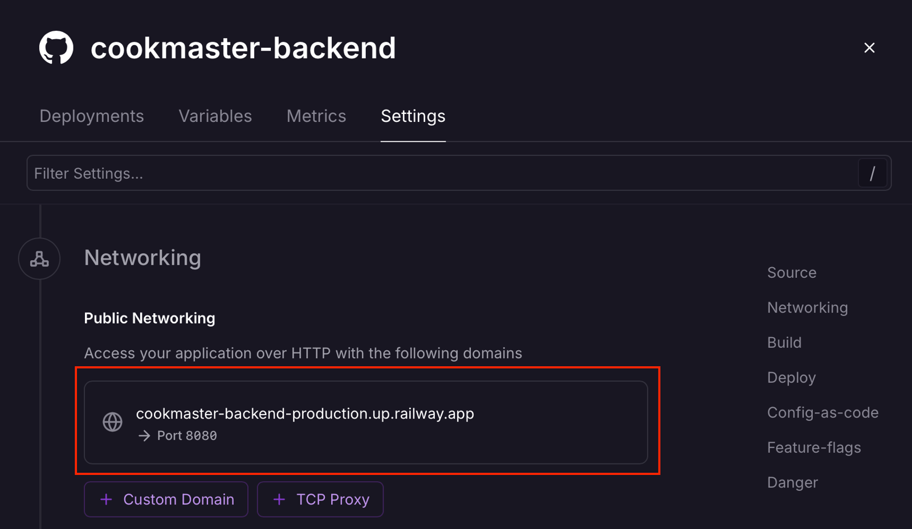

9.7 - Deploy da aplicação no Railway
Agora que realizamos todas as configurações necessárias, vamos fazer o deploy da nossa aplicação no Railway. Antes de começar, faremos alguns ajustes no projeto para garantir que tudo funcione corretamente.
Configurando o arquivo connection.js
Para que a aplicação consiga se conectar ao banco de dados, é necessário ajustar as variáveis de ambiente no arquivo connection.js, localizado em src/model/connection.js, para refletir as configurações geradas no MySQL do Railway. Atualize o arquivo conforme o exemplo abaixo:
const mysql = require('mysql2/promise');
const connection = mysql.createPool({
host: process.env.MYSQLHOST,
port: process.env.MYSQLPORT,
user: process.env.MYSQLUSER,
password: process.env.MYSQL_ROOT_PASSWORD,
database: process.env.MYSQL_DATABASE,
});
module.exports = connection;
Com o arquivo configurado, prossiga para criar um repositório no seu GitHub pessoal. Faça o push do código da sua aplicação ou utilize o repositório fornecido nesse link 09-automatizacao-e-deploy-de-aplicacoes/parte-02-deploy. Este repositório será vinculado ao Railway para deploy.
Vinculando o código com o serviço cookmaster-backend
Para vincular o código ao serviço criado no Railway, siga os passos abaixo:
- Acesse a dashboard do Railway e clique no
carddo serviçocookmaster-backend. - Na aba Settings, configure o código da API como indicado:
- Source: Clique em Connect Repo e selecione o repositório
cookmaster-apido seu GitHub. Autorize o acesso do seu GitHub, se necessário. - Build: Clique em Watch Paths e adicione a string
/src/**. Isso garante que o serviço reinicie automaticamente ao alterar arquivos dentro da pasta/src. - Deploy: Clique em Custom Start Command e insira o comando
npm startpara definir como o serviço será iniciado.
Adicionando variáveis de ambiente
- Acesse a aba Variables e clique em New Variable.
- Para cada variável necessária, clique em Add Reference, selecione a variável correspondente no serviço MySQL e clique em Add.
- Adicione as variáveis
MYSQLHOST,MYSQLPASSWORD,MYSQLPORT,MYSQLUSEReMYSQLDATABASE. - Atenção: Altere o valor de MYSQLDATABASE para
cookmaster_db.

Passo a passo para criar variáveis de ambiente no serviço cookmaster-backend
Após configurar todas as variáveis, clique em Deploy no centro da página para iniciar o serviço.
OBS da IA
Para o SAP CAP
- No BTP não se configuram usuário/senha do banco em variáveis: as credenciais chegam pelo service binding (
VCAP_SERVICESno Cloud Foundry, secrets no Kyma) e o CAP as lê sozinho. Para testar localmente com serviços reais usecds bind+cds watch --profile hybrid.
Populando o banco de dados
Com a aplicação configurada, agora vamos popular o banco de dados utilizando a extensão Database Client do VSCode.
- Obtenha a URL de conexão do banco de dados no card do serviço MySQL, acessando a variável de ambiente
MYSQL_PUBLIC_URL. - Use essa URL para se conectar ao banco de dados com o
Database Client.

Conexão com o MySQL Railway
- Execute o script SQL localizado em
cookmaster_db.sqlpara criar e popular as tabelas.

Execução das Queries MySQL
Com tudo configurado, a aplicação estará pronta para uso! Acesse a API pela URL exibida no card do serviço cookmaster-backend.

URL de acesso da Aplicação
Agora, que tal ver um apanhado geral do que aprendemos para consolidar de vez esse conhecimento? Para isso, é só assistir ao vídeo abaixo!
OBS da IA
CI/CD
- Do jeito configurado aqui, o Railway faz deploy de todo push na branch, mesmo com testes quebrados. Ative Wait for CI no serviço para que ele espere o GitHub Actions passar, ou faça o deploy pelo próprio pipeline.
- Popular o banco manualmente funciona uma vez. Para as próximas mudanças, use migrations versionadas aplicadas no deploy.
- Veja IA.5 - Deploy contínuo da API Cookmaster.
Minhas anotações
Atalhos: ← → navegar · Ctrl K ou / buscar